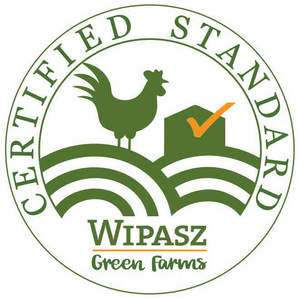

Trade Mark Journal No.2025/011 14 March 2025
UK00004165905 26 February 2025 (29,31,35,39,40,42,44)

- Class 29
- Fresh poultry; Poultry, not live; Cooked poultry; Extracts of poultry; Fresh chicken; Fresh turkey; Chicken pieces; Chicken legs; Chicken breast fillets; Chicken wings; Poultry products; Eggs; Chicken feet for human consumption; Cooked chicken; Dehydrated chicken; Pulled chicken; Frozen chicken; Deep frozen chicken; Chicken jerky; Chicken nuggets; Turkey meat; Frozen turkey; Turkey pieces; Breaded chicken bites; Marinated chicken bites; Hamburgers; Poultry chops; Chicken balls; Prepared meals made from poultry; Prepared meat; Processed meat products; Fried chicken pieces; Roasted chicken bites; Steamed chicken bites.
- Class 31
- Poultry, live; Poultry for breeding; Chicks; Turkey hens [live]; Preparations for egg laying poultry; Meal for animals; Foodstuffs for animals, namely Mineral and vitamin preparations; Foodstuffs for animals, namely Superconcentrates; Feed concentrates; Complete feed mixes; Additives for fodder, for animals; Additives not for medical purposes for fodder; Feed for poultry; Preparations for increasing egg laying; Silage fodder; Strengthening preparations, for animals; nutrients for animals; Eggs for hatching, fertilized; Fodder.
- Class 35
- Retail and wholesale services and online retail services, connected with the sale of poultry, Poultry products, Eggs, corns, feed and Cattle food for animals; Marketing; Advertising; Distribution of advertising, marketing and promotional material; Import and export services for the following goods: poultry, Poultry products, Eggs, corns, feed and cattle food for animals; Demonstration of goods; Conducting of commercial events; Arranging and conducting of marketing events; Magazine advertising; Advertising and marketing; Banner advertising.
- Class 39
- Packing in relation to the following goods: Poultry, Poultry products, eggs, cereals, feedstuff and Fodder for animals; Transport and Delivery in relation to the following goods: Poultry, Poultry products, Eggs, Cereals, Feedstuff and Fodder for animals; Vacuum packaging in relation to the following goods: Poultry, Poultry products, Eggs, Cereals, Feedstuff and Fodder for animals; storaging, in relation to the following goods: Cereals, feedstuff and Fodder for animals.
- Class 40
- Slaughtering of poultry.
- Class 42
- Certification [quality control]; Consultancy services relating to quality control; Quality assurance consultancy; Process monitoring for quality assurance; Quality assessment; Quality control testing; Quality control; Testing, analysis and evaluation of the services of others for the purpose of certification.
- Class 44
- Breeding of poultry.
WIPASZ S.A
Representative: Cleveland Scott York